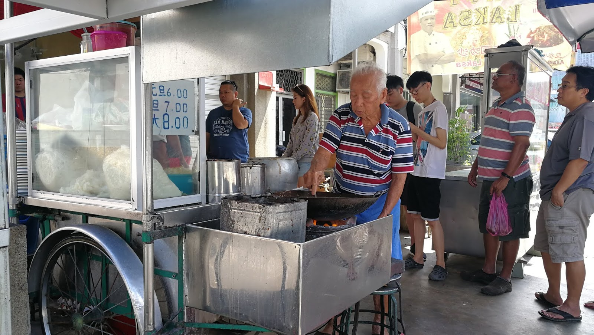

Char Kway Teow is one of Malaysia’s most famous street foods, especially popular in Penang.
The name means “stir-fried flat rice noodles” in Hokkien and Teochew dialects,
and it’s known for its smoky aroma, often referred to as wok hei (the “breath of the wok”).
A key feature of authentic Char Kway Teow is that it’s cooked quickly in small portions over a flaming wok,
giving the noodles their signature charred and smoky taste.
Like This Food?
Recipe
Soak the dried noodles in warm water for 30 to 45 minutes.
Transfer to a colander and let the excess water drain.
Add 2 teaspoons dark soy sauce, 2 tablespoons regular soy sauce, 1 tablespoon fish sauce,
1 teaspoon shrimp sauce or shrimp paste, 1 tablespoon oyster sauce, ⅛ teaspoon ground white pepper,
and 1 teaspoon sugar in a small bowl.
Mix until combined, and set aside.
Heat your wok to medium heat, and spread 1 tablespoon of vegetable oil around the perimeter of your wok.
Add the sliced Chinese sausages and stir-fry for 20 seconds. Add the garlic along with the shrimps and fish tofu.
Continue stir-frying for another 20 seconds.
Now, turn the wok to high heat.
Spread 1 tablespoon shaoxing wine around the perimeter of the wok.
Stir-fry for another 15 seconds. Add the noodles.
Next add the mung bean sprouts and gently mix everything together for 1 minute.
Recommended Location:
Siam Road Char Kuey Teow

Address:
82, Jalan Siam, George Town, 10400 George Town, Pulau Pinang